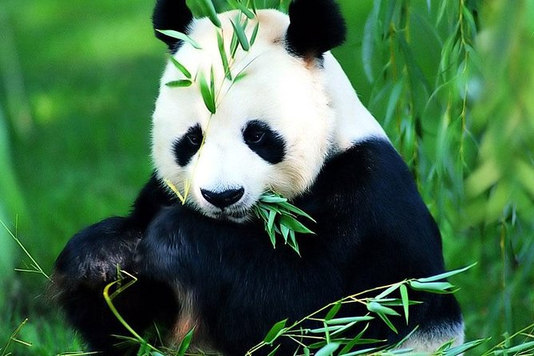

| Name | color and diet | |
|---|---|---|
| Grizzly Bear | Brown | omnivore |
| Black Bear | Black | omnivore |
| Panda | Black and white | Herbivore-Bambo |
| Polar Bear | white | Carnivore |
different kinds of bears.
sun bear, sloth bear, spectacled bear and kodiak bear.
Bears are elegant creatures. They are close relatives of dogs. Bears are one of the species that live almost every where around the world. Different kinds of Bears have adapted
to different habitats and locations. we have polar bears that live in harsh climate of north pole, Sluth Bears that live in tropical jungles of south east Asia. Although bears are
seen every where around the world. The current trend in global warming and Habitat destruction are becoming a huge threat for these species, most especially the Polar Bears.
Pandas are one of the classic examples of endangered species. Although the main is reason of reduction in the number of wild pandas in china is destruction of their habitat which is
Bamboo forests, Pandas are also a living example of how natural selection works, as pandas can't adapt to the current environment they live in. In an ideal situation adaptation would
mean there could be pandas that can consume other greens as food, so they are not only reliant to bamboo as food. Fortunately conservation efforts have lead to an increase in
the number of pandas they are born in wild and the ones born in captivity, but with climate change there is always a risk for new challenges.